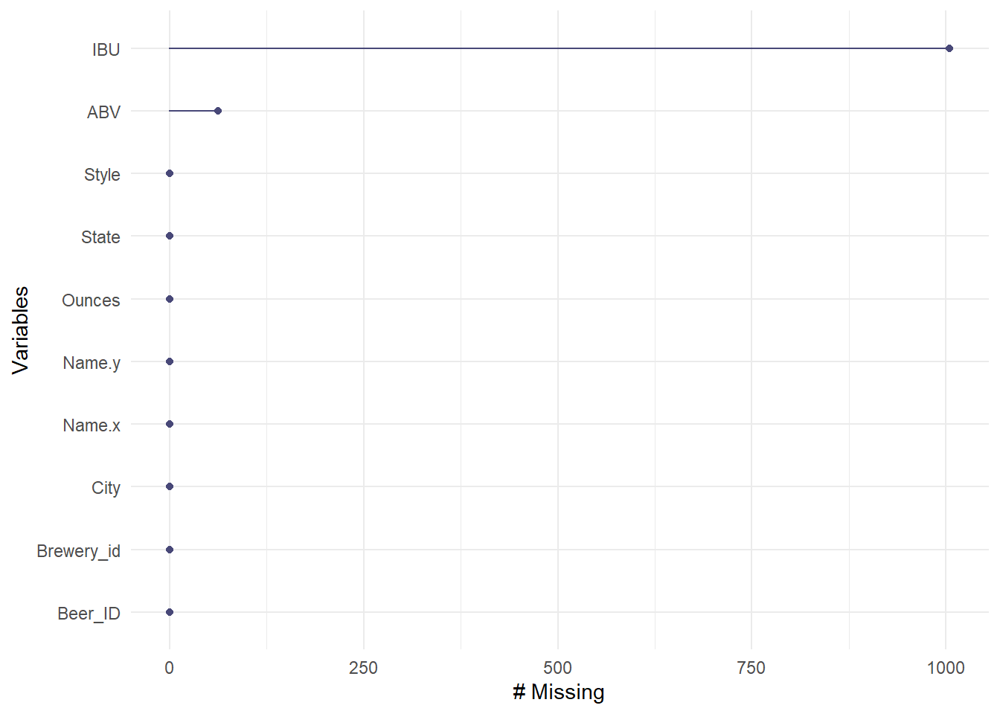
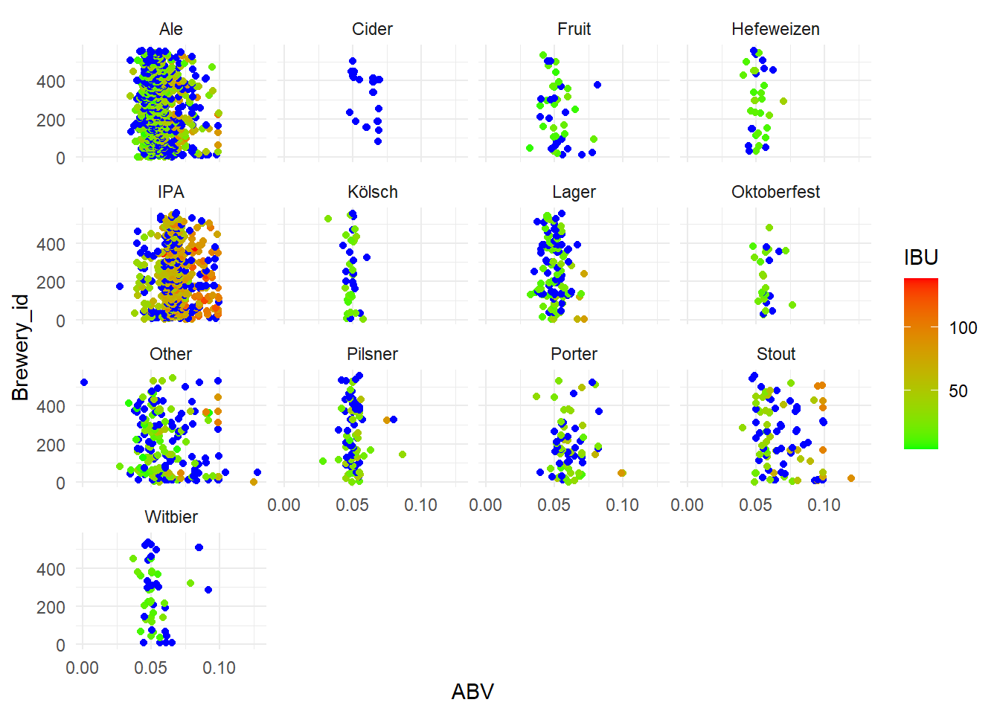

Beer and Breweries
Tadd Backus & Austin Webb
2022-08-12
Introduction and Overview
In this report, we explore the datasets you provided to us; the datasets that have information for various beers, and the breweries that produce them, in the USA. The steps and procedures taken for this analysis are detailed below. We start by looking at basic summary statistics, visual graphics, and at the statistical differences between ABV (alcohol by volume) and IBU (International Bitterness Units). We also looked at the differences between IPAs and other types of Ales.
The initial data provided were in two separate datasets, one for beers and one for breweries, which were later combined into a single dataset.
GitHub
Our GitHub repository {https://github.com/tadbackus/beerAndBreweries} has this code we used, as well as previously used code. There are also older versions of the PowerPoint that we created.
README.md: This page shows an introduction to the analysis we ran. It also includes a few details about the datasets provided.Beers.csvandBreweries.csvwere provided and are the original datasets from which our merged dataset is produced.
Here we import all the necessary libraries and packages
We will read in the beer and brewery data provided
The beer dataset has 2,410 observations and seven columns. The brewery dataset has 558 observations four columns.
Question 1
Number of Breweries in each state
We will first look at a table that shows the number of breweries in each state. We will then look at a map of the USA that is color coded to visually show the amount of breweries in each state.
## AK AL AR AZ CA CO CT DC DE FL GA HI IA ID IL IN KS KY LA MA MD ME MI MN MO MS MT NC ND NE NH NJ NM NV NY
## 7 3 2 11 39 47 8 1 2 15 7 4 5 5 18 22 3 4 5 23 7 9 32 12 9 2 9 19 1 5 3 3 4 2 16
## OH OK OR PA RI SC SD TN TX UT VA VT WA WI WV WY
## 15 6 29 25 5 4 1 3 28 4 16 10 23 20 1 4Below is the table that shows the number of breweries in each state:
AK AL AR AZ CA CO CT DC DE FL GA HI 7 3 2 11 39 47 8 1 2 15 7 4 IA ID IL IN KS KY LA MA MD ME MI MN 5 5 18 22 3 4 5 23 7 9 32 12 MO MS MT NC ND NE NH NJ NM NV NY OH 9 2 9 19 1 5 3 3 4 2 16 15 OK OR PA RI SC SD TN TX UT VA VT WA 6 29 25 5 4 1 3 28 4 16 10 23 WI WV WY 20 1 4
 We can see from the table, and the map as secondary evidence, that the
state with the most breweries is Colorado with 47 breweries.
We can see from the table, and the map as secondary evidence, that the
state with the most breweries is Colorado with 47 breweries.
Question 2
Combining the beer and brewery data
Here is where we merge the two datsets into one. We do this by merging on the ‘Brewery_id’ from the beer dataset and ‘Brew_ID’ from the brewery dataset.
## Brewery_id Name.x Beer_ID ABV IBU Style Ounces Name.y City State
## 1 1 Get Together 2692 0.045 50 American IPA 16 NorthGate Brewing Minneapolis MN
## 2 1 Maggie's Leap 2691 0.049 26 Milk / Sweet Stout 16 NorthGate Brewing Minneapolis MN
## 3 1 Wall's End 2690 0.048 19 English Brown Ale 16 NorthGate Brewing Minneapolis MN
## 4 1 Pumpion 2689 0.060 38 Pumpkin Ale 16 NorthGate Brewing Minneapolis MN
## 5 1 Stronghold 2688 0.060 25 American Porter 16 NorthGate Brewing Minneapolis MN
## 6 1 Parapet ESB 2687 0.056 47 Extra Special / Strong Bitter (ESB) 16 NorthGate Brewing Minneapolis MN## Brewery_id Name.x Beer_ID ABV IBU Style Ounces Name.y City State
## 2405 556 Pilsner Ukiah 98 0.055 NA German Pilsener 12 Ukiah Brewing Company Ukiah CA
## 2406 557 Heinnieweisse Weissebier 52 0.049 NA Hefeweizen 12 Butternuts Beer and Ale Garrattsville NY
## 2407 557 Snapperhead IPA 51 0.068 NA American IPA 12 Butternuts Beer and Ale Garrattsville NY
## 2408 557 Moo Thunder Stout 50 0.049 NA Milk / Sweet Stout 12 Butternuts Beer and Ale Garrattsville NY
## 2409 557 Porkslap Pale Ale 49 0.043 NA American Pale Ale (APA) 12 Butternuts Beer and Ale Garrattsville NY
## 2410 558 Urban Wilderness Pale Ale 30 0.049 NA English Pale Ale 12 Sleeping Lady Brewing Company Anchorage AKWe then look at the first six and final six observations from the new merged dataset.
Question 3
Missing values
We use a simple formula here to count the number of missing values in each column.
## Brewery_id Name.x Beer_ID ABV IBU Style Ounces Name.y City State
## 0 0 0 62 1005 0 0 0 0 0From this table, we see that there are 62 missing values for ABV and 1005 missing values for IBU.
Plotting missing values
We now look at a visually appealing way to see the missing data
gg_miss_var(beer_brewery_merged)## Warning: It is deprecated to specify `guide = FALSE` to remove a guide. Please use `guide = "none"` instead.
Categorizing beer type
We want to group the different beers by type of beer. We do this by creating a list of common beer types and assigning by the name of the beer.
## Ale Cider Fruit Hefeweizen IPA Kölsch Lager Oktoberfest Other Pilsner Porter
## 976 37 49 40 558 42 158 30 204 91 74
## Stout Witbier
## 100 51From this grouping, we see that there are 976 ales, 558 IPAs, and a variety of other beer types.
We use this code to see how the ABV and IBU compare for all the different types of beers
## Warning: Removed 62 rows containing missing values (geom_point). From these plots, we can see that all the ‘ciders’ have missing values. We will take care of these in the next chunk of code.
Removing Cider and verifying
We create a new df with the ciders filtered out. we then recreate the above plots that show how the ABV and IBU compare for all the different types of beers
## Ale Fruit Hefeweizen IPA Kölsch Lager Oktoberfest Other Pilsner Porter Stout
## 976 49 40 558 42 158 30 204 91 74 100
## Witbier
## 51## Warning: Removed 62 rows containing missing values (geom_point).Dropping ABV NAs–rework
kNN Imputation
This is where we start the kNN process. We impute the missing values with a kNN model. From the plots above, we see that the missing values have been accurately imputed with five of their nearest neighbors.
Question 4
Finding median ABV and IBU per State
We will create new dataframes that are grouped by state and have the
median ABV/IBU. We will use these new dataframes to create barplots to
visually see the differences of medians for each state. This will be
followed by more USA heatmaps. These ones showing the median ABV/IBU.


Question 5
Max ABV
We changed the names of two columns that were automatically named from when we merged the datasets. We extract the observation with the highest ABV and put it in a dataframe.
The max ABV is found in Lee Hill Series Vol. 5 - Belgian Style Quadrupel Ale, which has an ABV of .128
Max IBU
We extract the observation with the highest IBU and put it in a dataframe.
The max IBU is found in Bitter Bitch Imperial IPA, with an IBU of 138.
Question 6
Stats of ABV
We made a table that shows basic summary statistics for the ABV. We also made a couple plots to visually show these summary statistics.
## Min. 1st Qu. Median Mean 3rd Qu. Max.
## 0.00100 0.05000 0.05600 0.05976 0.06700 0.12800## `stat_bin()` using `bins = 30`. Pick better value with `binwidth`.
 We can see basic summary statistics in the table below: Min. 1st Qu.
Median Mean 3rd Qu. Max. 0.00100 0.05000 0.05600 0.05976 0.06700
0.12800
We can see basic summary statistics in the table below: Min. 1st Qu.
Median Mean 3rd Qu. Max. 0.00100 0.05000 0.05600 0.05976 0.06700
0.12800
Question 7
ABV vs IBU scatter
We created a scatterplot to help see the correlation between ABV and IBU. We also looked at the exact correlation coefficient.
## `geom_smooth()` using formula 'y ~ x'
## [1] 0.7222858The correlation coefficient is 0.7222. This suggests that the average unit of IBU will increase by 0.7222 units for every one unit of increase in ABV.
Question 8
IPA vs other Ales
We made a new dataframe that only contains IPA and Ale beer types. We built a scatterplot to help visualize the differences between the two types of beer and the ABV and IBU.
## Brewery_id Beer Name Beer_ID ABV IBU Style Ounces Brewery Name
## Min. : 1.0 Length:1492 Min. : 1.0 Min. :0.02700 Min. : 4.00 Length:1492 Min. :12.00 Length:1492
## 1st Qu.: 93.0 Class :character 1st Qu.: 792.8 1st Qu.:0.05100 1st Qu.: 25.80 Class :character 1st Qu.:12.00 Class :character
## Median :205.0 Mode :character Median :1474.5 Median :0.06000 Median : 42.00 Mode :character Median :12.00 Mode :character
## Mean :230.1 Mean :1431.8 Mean :0.06131 Mean : 46.97 Mean :13.59
## 3rd Qu.:361.2 3rd Qu.:2076.2 3rd Qu.:0.07000 3rd Qu.: 65.00 3rd Qu.:16.00
## Max. :558.0 Max. :2692.0 Max. :0.09900 Max. :138.00 Max. :32.00
##
## City State beerCat
## Length:1492 CO :170 Ale :944
## Class :character CA :123 IPA :548
## Mode :character IN : 87 Fruit : 0
## MI : 85 Hefeweizen: 0
## OR : 84 Kölsch : 0
## TX : 73 Lager : 0
## (Other):870 (Other) : 0